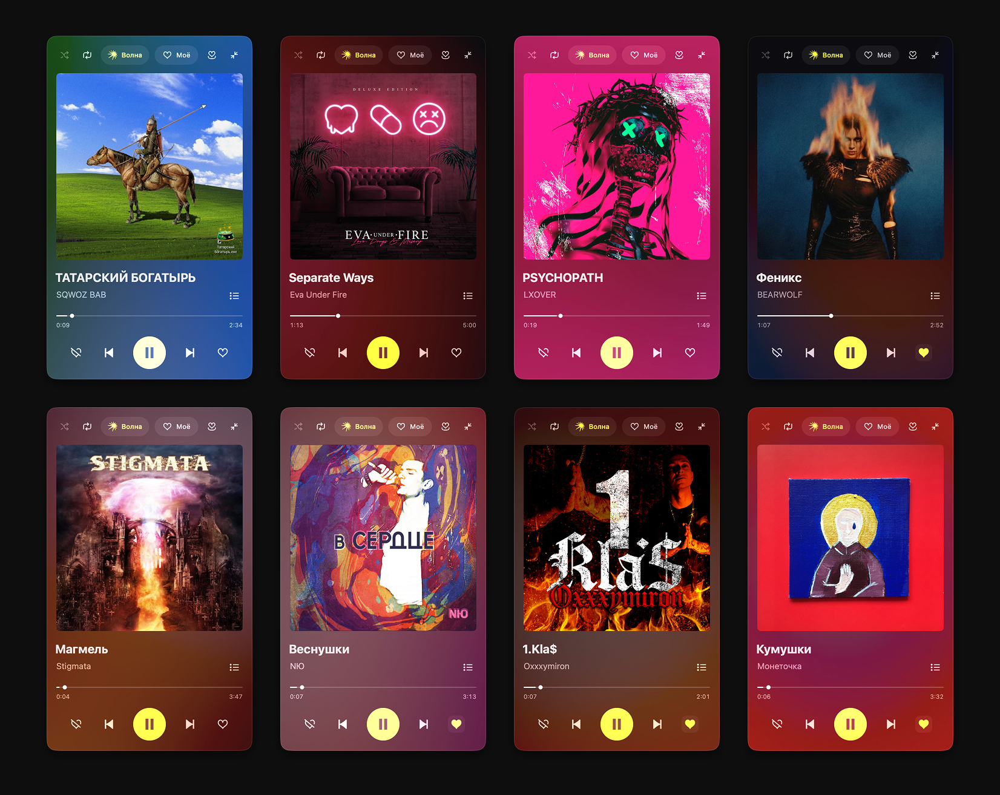
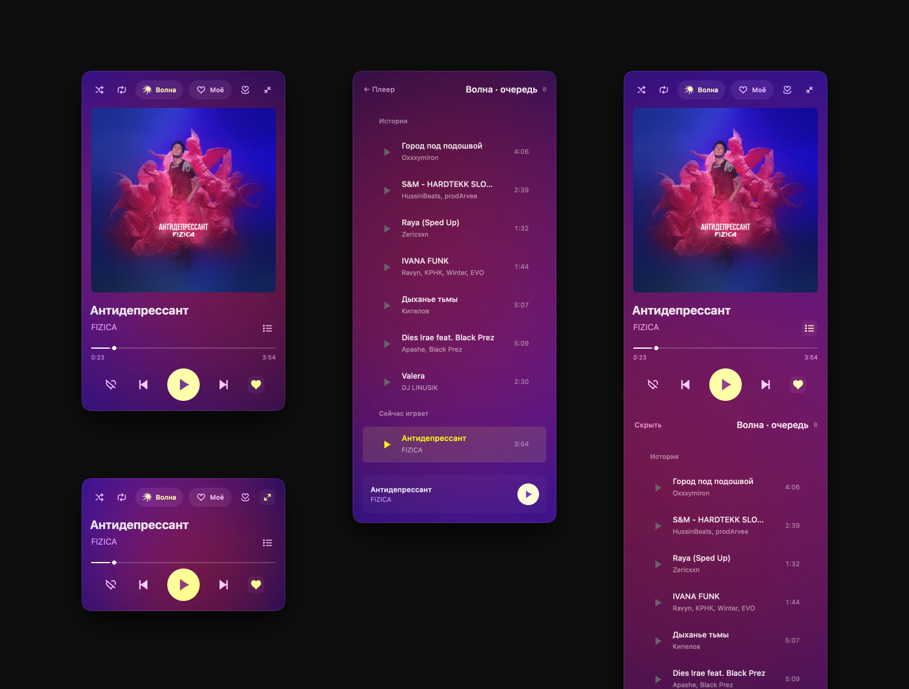

Цвет обложки
Мягкий размытый фон медленно вращается и меняется вместе с треком.
Небольшой плеер для macOS
Обложка задаёт настроение.
«Волна», любимые треки и очередь —
в одном небольшом окне.

Мягкий размытый фон медленно вращается и меняется вместе с треком.
Персональные рекомендации и понравившиеся треки. Переключение одной кнопкой.
Посмотри, что играло и что будет дальше. Выбери песню прямо из списка.
Спрячь обложку, когда нужно больше места. Управление остаётся под рукой.
Обычное окно, системное размещение у краёв и полный экран. Высоту можно отдать очереди.
Входишь на странице Яндекса. Музыка и любимые треки берутся из твоего аккаунта.
С обложкой, без неё, со списком вместо плеера
или с очередью под ним. Выбирай под свой рабочий стол.

Скачай готовую сборку. ИИ и инструменты разработчика для установки не нужны.
Дважды нажми Установить.command и выбери нужный режим автозапуска.
Открой свою музыку и нажми «Волна» или «Моё». Для прослушивания нужен доступ к сервису в твоём аккаунте.
Можно и без установщика: перетащи приложение в «Программы».
Подробная инструкция есть внутри архива.
Сборка имеет локальную подпись, но пока не заверена Apple для распространения. Если доверяешь источнику, после попытки запуска открой «Системные настройки → Конфиденциальность и безопасность» и подтверди открытие конкретного файла кнопкой «Всё равно открыть». Глобально отключать защиту Mac не требуется.
Минимальная целевая система — macOS 13. В архиве универсальная сборка для Apple Silicon и Intel. Работа проверена на Apple Silicon; запуск на Intel и старых версиях macOS отдельно не проверялся.
Нет. Это независимый проект Максима Чистова, работающий через сайт Яндекс Музыки. Проект не связан с Яндексом. Обложки, музыка и графика сервиса принадлежат соответствующим правообладателям.
Да. Исходники открыты на GitHub. Ошибки можно описать в Issues, исправления — предложить через pull request. Изменения сайта Яндекса могут потребовать обновления плеера.